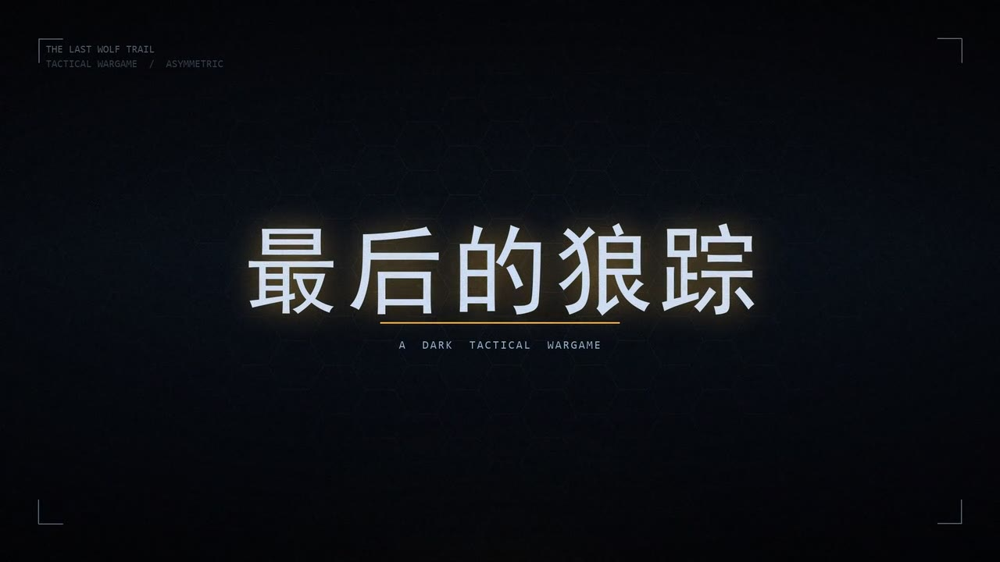
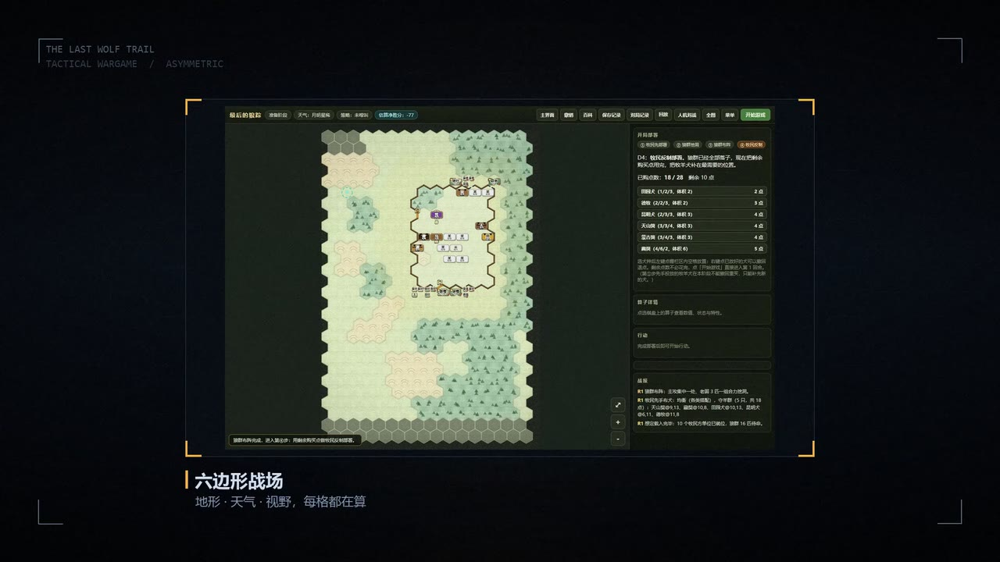
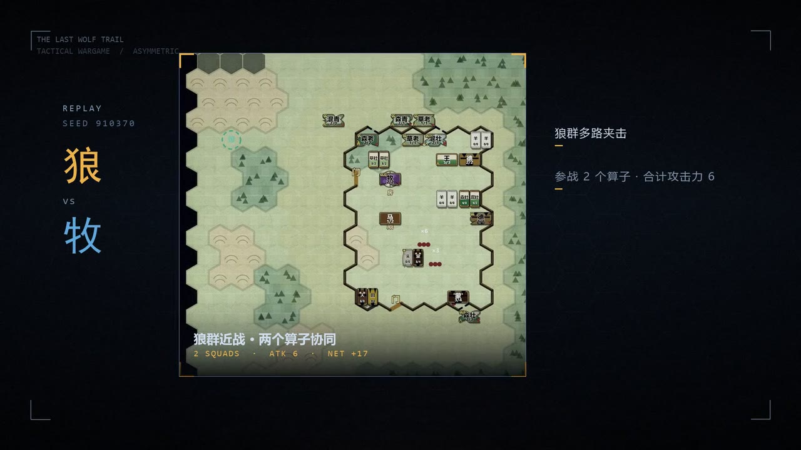
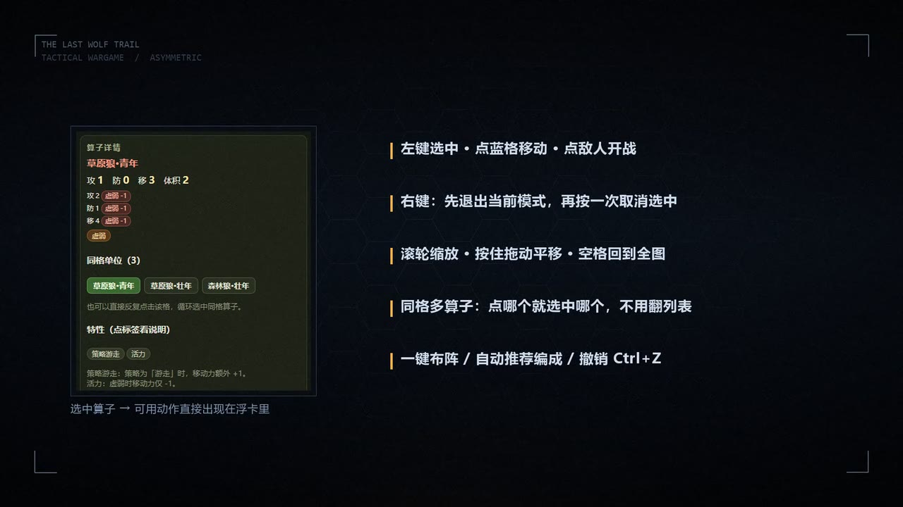
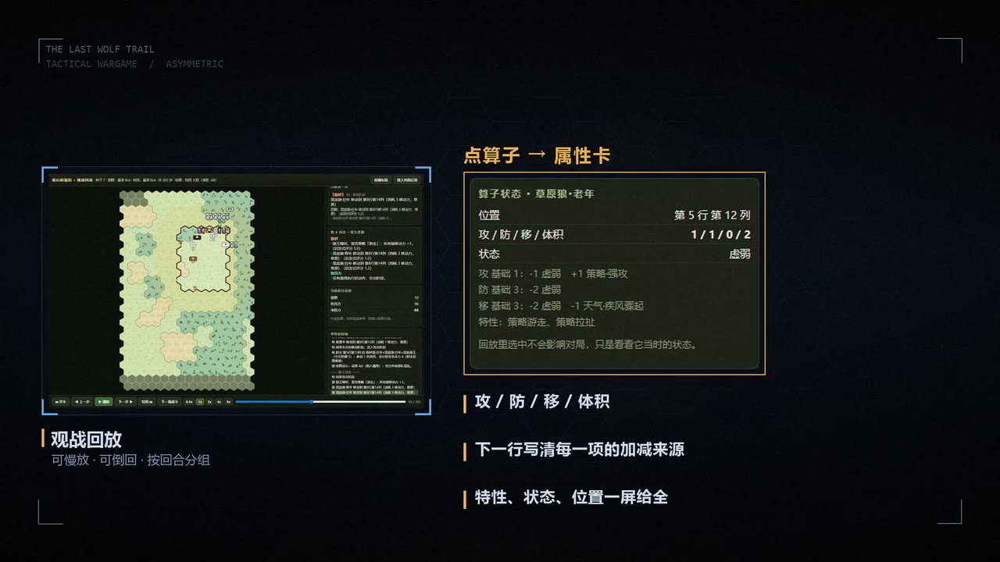
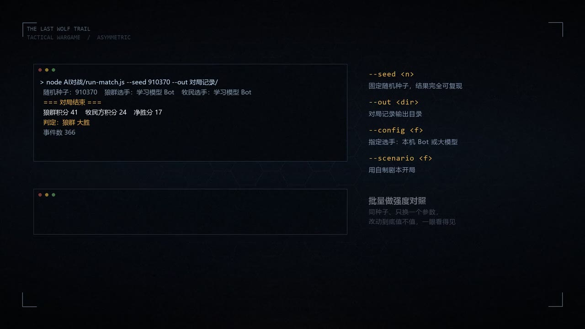

影像作品 · FILM
《最后的狼踪》95 秒宣传片
95 秒 / 1920×1080 / 30fps / 无音轨。每一帧由程序合成，不是截图配字幕。一张地图、两个阵营、没有第二次机会。
成片
网页版 1280×720网页版：1280×720 / 19.7 MB / 无音轨，嵌进站点用的是这一版；完整版是 1920×1080 / 93.2 MB，供投递与传平台使用。
95秒
成片时长
2850
逐帧合成（帧）
13
分镜段落
30fps
帧率 · 1920×1080
项目概览
为什么用程序画常规做法是录屏加字幕，但兵棋的界面截图风格不统一，拼在一起会碎。于是我干脆用程序逐帧画：底色渐变、六边形点阵、胶片颗粒、扫描线和暗角都由代码生成，截图只在需要实机画面的段落里按调色规则嵌入。
整支片子没有音轨，节奏全靠画面切换与字幕推进。95 秒里讲了 13 个段落：从狼眼、主标题、规格、对峙，到战场、攻击预演、平台、对局实录，再到人机流程、操作便利、回放属性、剧本自定义和自动化脚本参数。
分镜表
13 段 · 95 秒| 时间 | 段落 | 内容 |
|---|---|---|
| 0.0–1.4 | 黑场 | 一道琥珀光横扫 |
| 1.4–5.2 | 狼眼 | 黑暗中浮起一对发光的眼，缓慢呼吸 |
| 5.2–8.8 | 主标题 | 「最后的狼踪」砸入 + 冲击闪白 + 光条展开 |
| 8.8–12.6 | 规格 | 不对称战术兵棋 / 16×28 / 12 回合 |
| 12.6–19.2 | 对峙 | 左「狼群」右「牧民」逐条对位 |
| 19.2–25.2 | 战场 | 六边形棋盘截图 + HUD 角标 |
| 25.2–31.4 | 攻击预演 | 战果列截图 |
| 31.4–36.6 | 平台 | AI 对战平台界面 |
| 36.6–44.8 | 对局实录 | 8 秒实机片段：左 REPLAY / 狼 VS 牧，右三条战况标注 |
| 44.8–53.0 | 人机对战流程 | ① 选模式 → ② 挑边 → ③ 四步部署（一键布阵可复现） |
| 53.0–62.0 | 操作便利 | 行动浮卡特写 + 左键 / 右键 / 滚轮 / 空格 / 同格切换 / 撤销 五条键位 |
| 62.0–71.0 | 回放：点算子看属性 | 回放页 + 真实算子状态卡（攻防移体积、加减来源、特性、状态） |
| 71.0–80.0 | 剧本自定义 | 剧本编译器 + 三条说明（对局回放都绑剧本、自带图库、改完回归） |
| 80.0–89.0 | 自动化脚本参数 | 终端面板：run-match.js --seed/--out 实跑输出 + 四个参数释义 + quickscore.js 批量对照 |
| 89.0–95.0 | 收尾 | 标题回落 + ONE MAP. TWO SIDES. NO SECOND CHANCE. |
分镜按最终成片顺序整理；网页版与完整版画面一致，只是分辨率与文件大小不同。
视觉做法
程序画的质感六边形点阵
呼应 16×28 战场，中心亮、边缘暗，让画面和兵棋本身长在一起。
颗粒 / 扫描线 / 暗角
在渐变底上叠胶片颗粒、扫描线与暗角，压住纯数字画面的「平」。
Pillow 逐帧合成
2850 帧全部由脚本渲染，改文案或改配色重跑即可，不用手动重排。
截图明暗自适应
亮图压暗降饱和、暗图提亮，否则暗色界面直接嵌进片子里会被压死。
字体分工
simhei 做标题、msyhbd 做小标题、msyh 做正文、consola 只放英文小字。
实机片段裁切
从录屏里裁掉浏览器与任务栏，只留棋盘（crop=830:775:400:150）。
截帧
6 帧从成片里抽的 6 帧，图注对应分镜段落，点开可看大图。






run-match.js 的 --seed / --out 等参数说明。技术栈与踩坑
Pillow / ffmpeg怎么重建
film.py --preview 49 58 67 76 85先出预览帧，确认画面再整片渲染。film.py --all渲染 2850 帧到frames\，一帧一张 JPG。- ffmpeg 按
-framerate 30读帧，hqdn3d=2:2:4:4降噪，libx264 / crf 23.8 / yuv420p / +faststart 出成片。 - 网页版再用 ffmpeg 缩到 1280×720，crf 21，供站点嵌入。
素材来源
画面里的兵棋截图来自自己的项目产出；实机片段从录屏里裁切、调色后嵌入，不借用外部素材。
踩过的坑
- 颗粒是码率杀手：crf 18 出片 649 MB；换成 crf 23.8 + hqdn3d 后降到 93 MB，肉眼无差。
- 不要用 zoompan 做慢速推拉：它按整数像素裁切，每帧挪不到 1 px 会逐帧抖动；改用淡入淡出与揭示。
- 中文不能进 Consolas：终端面板里会变成方块，必须换 CJK 字体。
- 无音轨：没有配乐与旁白，只能靠画面、字幕与节奏叙事，这是这版片子的限制。